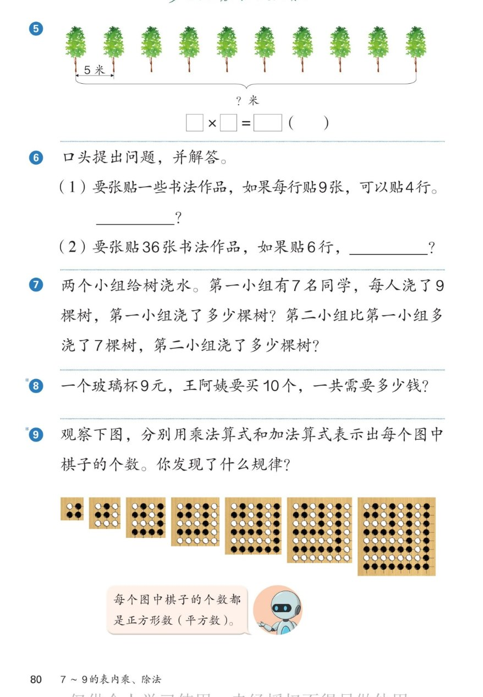

🔊 五、7~9 的表内乘、除法 · 课本第 80 页 · 练一练 5~9
人教版《数学》二年级上册 · 有声图文带读 · 先想后看解析 · 植树间隔 · 提问题 · 平方数棋盘
题数
6
认知
2
强化
3
拓展
1
本页重点
间隔问题 · 口诀解决问题 · 平方数规律
🎧 分两步学：
① 解析教材图片
——纯声音读图，读到哪一块哪一块闪动提示；关键处先倒计时让你思考，再在图片下方给出解析并朗读。
② 分层提问练习
——六道分层题（认知 / 强化 / 拓展），先思考再展开解析、朗读参考答案；这一步不再回到图片。
也可以随时点任意一句话、图上任意一块单独听；点课本文字卡还会展开答案。
教材图片（点块听读，读到哪块哪块闪）

📖 人教版《数学》二年级上册 · 课本第 80 页 · 图片仅供个人学习，版权归人民教育出版社所有
🤔 想一想（点我可跳过）
课本的文字（点句子：听读 + 看答案）
植树间隔
10 棵树之间有几个间隔？
看答案 ▾
10 棵树之间有
9 个间隔
；
9×5=
45（米）
，也可以 5×9=45；
💡 棵数比间隔数多 1，别乘成 10
第⑥题
口头提出问题，并解答
看答案 ▾
(1) 一共贴了多少张？9×4=
36（张）
；
(2) 每行贴几张？36÷6=
6（张）
；
💡 提问题：把知道的条件用起来
第⑦⑧题
浇树与买玻璃杯
看答案 ▾
第7题：7×9=
63（棵）
；63+7=
70（棵）
；
第8题：9×10=
90（元）
；
💡 先乘出基础数，再按多几加几
第⑨题
棋子图里的平方数
看答案 ▾
1×1=
1
，2×2=
4
，3×3=
9
，4×4=
16
；
5×5=
25
，6×6=
36
，7×7=
49
；
发现：都是
相同的数相乘
——正方形数（平方数）；
💡 七七四十九正藏在最后一幅图里
分层提问练习（先想后看解析）
🌳
认知
10 棵树之间有几个间隔？
看解析
🤔 想一想
解析：
有
9 个间隔
；
棵数比间隔数
多 1
；可以用手指比划验证。
🥛
认知
9×10 怎么想？得数是多少？
看解析
🤔 想一想
解析：
9 个 10 相加，9×10=
90
；
买 10 个玻璃杯一共
90 元
。
🪣
强化
第 7 题两个小组各浇了多少棵树？
看解析
🤔 想一想
解析：
第一小组：7×9=
63 棵
；
第二小组：63+7=
70 棵
；
💡 多浇 7 棵，就用加法
⚫
强化
25 是第几幅图的棋子数？是几乘几？
看解析
🤔 想一想
解析：
第
5
幅图：5×5=
25
；
加法：5+5+5+5+5=25；
💡 第几幅图就是几×几
🔍
强化
棋子图的规律是什么？
看解析
🤔 想一想
解析：
第几幅图就是
几×几
；
得数 1、4、9、16、25、36、49，都是
平方数
；
💡 图形排成正方形，个数就是平方数
🌈
拓展
按规律接着画，第 8 幅图有多少个棋子？
看解析
🤔 想一想
解析：
第 8 幅：8×8=
64 个
；
七七四十九后面就是
八八六十四
；
🌈 平方数会一直长下去：64、81……
① 解析教材图片
② 分层提问练习
⏹ 停止
纯声音 + 高亮跟随 · 想好才出解析
← 返回导航